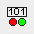

工具栏
Logisim-evolution 有多个工具栏。主工具栏是可配置的，可快速访问最常用的工具。这些工具在导航窗格中也始终可用。
"绘图"模式下的工具栏
"外观"模式下的工具栏
最后，根据导航面板的状态还会出现另外两个工具栏。如下所示。
主工具栏
这个工具栏有两种显示方式（见上文），可根据编辑模式显示为“绘图”或“外观”。
"绘图"模式下的工具栏
在“绘图”模式下，可以通过 | 项目 | → | 选项 | 菜单中的 | 工具栏 | 选项卡来自定义主工具栏。具体配置见工具栏选项卡页面。下面简要介绍默认工具栏中的工具。构建电路时还可以使用许多其他组件；关于所有工具的更多信息，请参阅库参考。
手形工具： Ctrl-1 此工具用于与仿真中的组件交互。例如，点击电路连接可在不同状态之间切换； 点击导线可查看其中传输的信号值。更多信息请参阅 Base 库中的手形工具。 |
|

|
选择工具： Ctrl-2 此工具在设计电路时特别有用，可用于选择、移动元素，也可用于连接电路。更多信息请参阅 Base 库中的选择工具。 |
| 接线工具： Ctrl-3 此工具可在画布中放置导线。 | |
| 文本工具： Ctrl-4 此工具可在绘图中放置文本，并修改组件标签。更多信息请参阅 Base 库中的文本工具。 | |
| 引脚工具： Ctrl-5 / 6 此工具可在图中放置输入或输出引脚。引脚分为输入和输出两种类型，详见 接线 库中的引脚页面。 | |
| 非门、与门、或门等工具： Ctrl-7 / 8 / 9 / 0 这些工具可在绘图中放置基本逻辑门。逻辑门在门电路库中介绍。 | |
| 添加 D 触发器工具： 此工具可在绘图中放置 D 触发器。D 触发器在存储器库中介绍。 | |
| 添加寄存器工具： 此工具可在绘图中放置寄存器。寄存器在存储器库中介绍。 |
“外观”模式下的工具栏
在此模式下，我们可以编辑子电路的符号。工具栏提供了绘图工具。您可以在编辑子电路外观中找到更多使用信息。
|
|
选择工具： 选择、移动、复制、粘贴符号。 |
| 文本工具： 插入或编辑文本。 | |
| 线段工具： 创建一条线段。 | |
| 曲线工具： 创建一条贝塞尔曲线。第一次 单击 并拖动可指定线段起点，第二次 单击 并拖动可结束线段并设置曲率。在线段上 单击 会显示三个控制点。按住 Shift 并单击中心控制点可强制生成对称曲线。按住 Alt 并单击中心点，可使曲线通过控制点（鼠标下方）。 | |
| 折线工具 创建一系列相连的线段，每次 单击 开始一条新线段。双击 结束序列。 | |
| 矩形工具 通过从一个角拖到对角创建矩形或正方形（ Shift ）。 | |
| 圆角矩形工具： 按住 Shift 并从一个角拖到对角，可创建带圆角的矩形或正方形。 | |
| 椭圆工具 通过从一个角拖到对角创建椭圆或圆（ Shift ）。 | |
| 多边形工具 创建多边形，每次 单击 开始一条新边。双击 结束序列。 | |
|
 |
动态组件 放置一个动态组件。单击 打开一个窗口，用于在子电路中选择组件。 |
导航面板选项卡工具栏
该工具栏区域根据程序的选项卡显示两个工具栏。第一个有四个按钮，在程序处于“绘图”模式时显示。这些是菜单子菜单 | 项目 | 的快捷方式。

|
添加电路： 向项目中添加一个新电路。 |
| VHDL：向项目中添加一个新的 VHDL 电路。 | |
| 上移电路：在项目层次结构中上移电路。 | |
| 下移电路：在项目层次结构中下移电路。 | |
| 编辑模式：在原理图模式和外观编辑模式之间交替切换。 | |
| 删除电路：从项目层次结构中删除电路。 |
第二个在程序处于仿真树视图时显示。这些是菜单子菜单 | 仿真 | 的快捷方式。
| 启用/禁用： Ctrl-E 启用或禁用仿真。 | |
| 单步仿真： Ctrl-I 在仿真中前进一步。 | |
| 启用/禁用时钟： Ctrl-K 启用或禁用时钟。 | |
| 单步时钟脉冲： Ctrl-T 前进一个时钟脉冲。 | |
| 完整时钟周期： F2 前进一个完整时钟周期。 |
您可以在仿真菜单中找到更多信息。
下一节： 属性表。